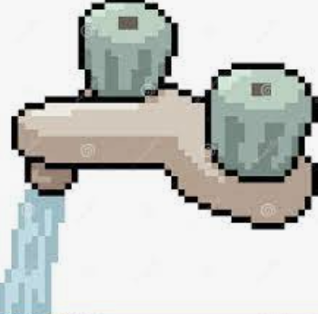

BNB Faucet
Submit your binance smart chain address to recieve bnb
Metamask Address

Faucet created for anyone who is unable to build due to lack of bnb
Intention is to help new users who might not have enough for fees
This is a personal undertaking: Expecting bnb to only fund/last for 150-200 requests
You can find me at rrahulchandran.com or @rrahul_chandran(twitter) to connect
If anyone wants to help, they can always donate bnb to below address to keep faucet alive
0x4076147929353629EecC00f8621f58b9e8C46911